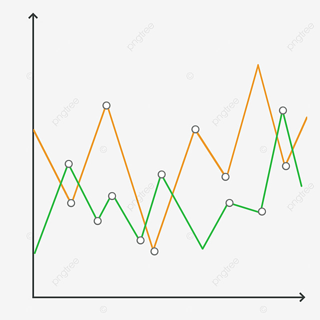
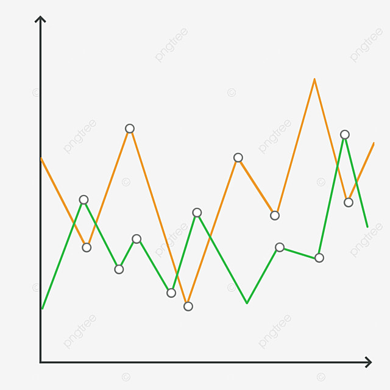
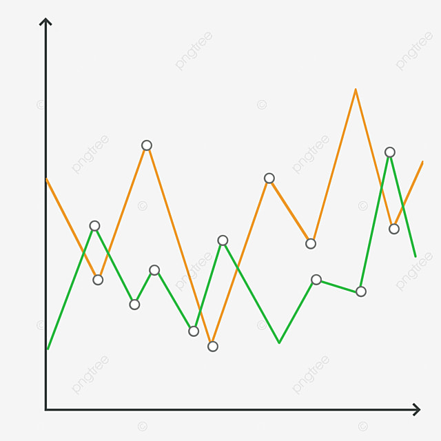

A trick in line form (Exam Blog).
The main purpose of the graph is to manipulate live Covid-19 data using a line graph drawn using D3. However due to my technical skill level, I was not able to pull the live data from the postman API. Inevitably, I managed to shape the South African provinces data from the console log and exported into a csv file.
The power of a togglable line chart lies in its ability to communicate changes to a user without information clutter. Data represented for highly complicated trading systems for example, can be simplified with a line chart that could be zoomed in and out. For this graph, I made the line chart to have togglable Covid-19 statistics for the 9 provinces of South Africa. This system works as a filter for unwanted information, while the user is aware of the existence of that same information. This is the principle of data reduction. Manovich (2011) argues that the power of reduction in graphs forms the first and fundamental principle of information visualisation (Infovis). The second principle is spatial awareness, which includes, but is not limited to the usage of shapes and sizes.
To fully manipulate the second principle of data visualisation, I needed to use a togglable line graph instead of a static line. This allows for the user to read the shape (unevenness) of the graph to raise reader awareness of the changes in daily reported Covid-19 cases. This was a deliberate step of creating a visual, from a previous visual. By toggling Eastern cape for example, the user reads the data as ‘active’ and different from Gauteng or any other province.
To compare the part to a whole, I included the national totals for the dates. This gives the user a more useful analysis of the data. By doing so, I concur with (Latour 2009), who argues that when one toggles the part and the whole, “The ‘Whole’ becomes a mere a provisional visualization which can be modified and reversed at will”. The moving back to the provincial data, I aim to create an illusion that the part components have been regrouped, refreshed, or assembled into new data. This makes this line graph more engaging that static line graph. In theory work on information visualisation (Kerren et al, 2008) argue that interactivity in data visualisations is a device that affords data traditionally static data to “come-alive’.

 

Such a graph widens viewership and extends interests to the audience. However, the downside of this graph is the lack of actuality of figures as one hovers over the selected line. This further conceal information and allows for the downplaying of the impact of Covid-19
(To take the graph furthermore, I would have liked to include the national line into the graph every time the user toggles the provincial data. I argue that this graph allows for thinking about visualisations away from a social semiotic standpoint, where a reader is invited to view the data as it is represented and continually do so in an engaging way. a nuanced use of semiotics in data visualisations and their production, uncovers the power of how these visualisations further influence the attitude of the reader towards the represented data.
References
Kerren, A., Stasko, J., Fekete, J.D. and North, C. eds., 2008. Information Visualization: Human-Centered Issues and Perspectives (Vol. 4950). Springer.
Latour, Bruno. 2009. Tarde's idea of quantification. In The social after Gabriel Tarde: Debates and assessments, edited by Mattei Candea http://www.bruno-latour.fr/articles/article/116-TARDE-CANDEA.pdf (http://www.bruno-latour.fr/articles/article/116-TARDE-CANDEA.pdf) [Google Scholar]
Manovich, L. (2011) ‘What is visualisation?’, Visual Studies, 26(1), pp. 36–49. doi: 10.1080/1472586X.2011.548488.
